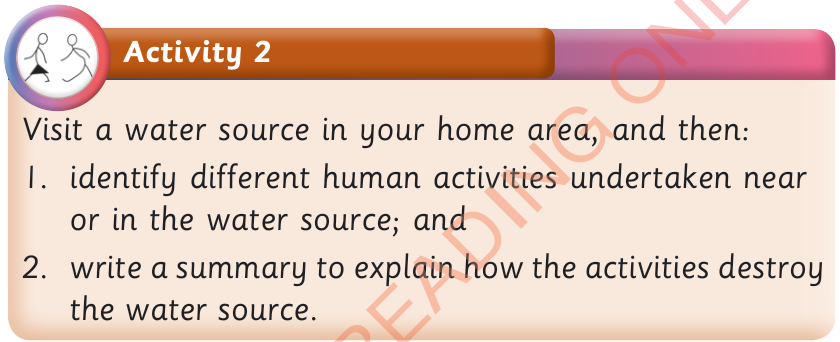

Activity 2
Visit a water source in your home area, and then:
1. identify different human activities undertaken near or in the water source; and
2. write a summary to explain how the activities destroy the water source.
Activity 2Visit a water source in your home area, and then: